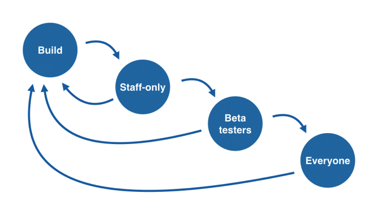
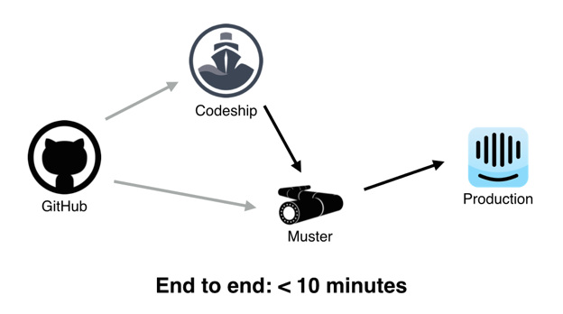

Deployment
Research Project
Created by Nate Garrett
VSCO
Mobile app deployment presents unique challenges
Mobile user have an incredibly low tolerance for buggy apps
ONLY 16% are willing to try a failing app more than twice
App stores make responding to problems a difficult hurdle, requiring additional time-costly reviews that can take days.
The Solution?
Deciders aka Featured Flags
Deciders, also called "Featured Flags" are a technique that allows teams to enable or disable features at any time, without having to deploy an update. Instead they can deploy a feature or update in an off state, then flip a switch to turn it on to any subset of users, immediately – no need to wait on app store approvals.
Changes and rollbacks as easy as flipping a switch

Using Decider to turn off new updates is incredibly easy. One flip of a switch and end users’ apps will instantly roll back to their previous state.
Benefits
Some of the benefits of using featured flags are:
- Take more risks, knowing that they can respond quickly to unforeseen issues
- Instantly control staged rollouts and rollbacks on a granular level
- Segment and test on specific users
Intercom
Intercom also uses features flags in addition to using a feedback loop. The feedback loop allows them to evaluate how people use the new feature, how the code performs in production and whether or not it's even a good idea.
Automatic Deployment System
Intercoms deployment plan gets the job done from end to end in less than 10 minutes
Here's how it works:
After a code review on GitHub, engineers merge their features into the master branch. GitHub sends a webhook to Codeship, who run their test suite for them to make sure there are no regressions in existing behaviour. GitHub also sends a webhook to a tool they built called Muster, which prepares the latest version of the code for release.
Once the tests have run successfully, Codeship sends a webhook to Muster, and the code is pushed out to their production environment of about 200 EC2 instances.
Benefits of this system
Their tried and tested system provides many benefits, specifically:
- Helps new engineers
- Cuts out bad behavior
- Optimised for deployment rate - less than 10 minutes!
Teamwork Chat
Teamwork uses a system which includes CodeShip and Amazon S3 buckets
First, they bump the version number and merge the changes into their master branch
Second; their continious integration and deployment (CI/CD) server i.e. CodeShip, compiles and tests the merge commit
If the tests pass, CodeShip goes on to send the new files up to an Amazon S3 bucket
What is CodeShip?
Codeship is a hosted continuous delivery service that focuses on speed, reliability and simplicity. You configure Codeship to build and deploy your application from GitHub to the staging or the production platform of your choice.
By integrating CodeShip and Amazon S3 buckets, Teamwork seamlessly deploys their apps from development to staging to production
Conclusion
While each company uses a unique deployment plan, the core techniques seem very similar
- Combine code from multiple developers using a system such as Github
- Test the new code in a staging environment, usually to a smaller segmented group
- If tests pass, push the staging environment to a production environment with the caveat that rollbacks can be done quickly, and with little to no negative experience to the end user
References:
Wang, K. (2016, January 04). How VSCO & Twitter Deploy New Features to Millions of Mobile Users - Apptimize. Retrieved May 20, 2016, from http://apptimize.com/blog/2016/01/how-vsco-twitter-deploy-new-features-to-millions-of-mobile-users/
Kenny, E. (2015). Why Continuous Deployment Just Keeps On Giving - Inside Intercom. Retrieved May 20, 2016, from https://blog.intercom.io/why-continuous-deployment-just-keeps-on-giving/
Linehan, D. (2016, March 25). Deploying the Teamwork Chat Web app. Retrieved May 20, 2016, from http://engineroom.teamwork.com/how-we-sped-up-serving-static-files-in-teamwork-chat/